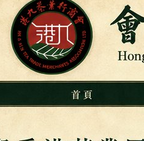
Hong Kong & Kowloon Tea Trade Merchants Association
EST. 1948
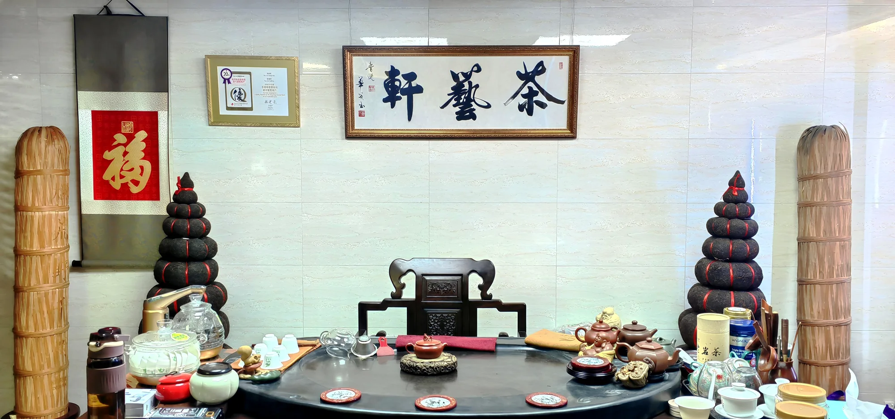
TEA ART GALLERY · EST. 1986
四十年老字號 — 以普洱茶及名貴紫砂壺為經營特色
茶藝軒由劉正慶先生於 1986 年創立，紮根香港四十年，專注中國傳統茶文化的傳承與推廣，以普洱茶及名貴紫砂壺為主要經營特色。
多年來，茶藝軒精選不同年份及特色的普洱茶，並提供各類紫砂茶壺與茶具，讓茶友在品茗之間，感受中國茶文化的深厚底蘊。現設觀塘總部、灣仔及佐敦三間門店。
茶藝軒曾連續 20 年獲香港旅遊發展局「優質旅遊服務」計劃認可，致力為本地及海內外茶友提供專業、真誠的服務。（其證書有效至 2025 年；現行資格以官方名錄為準。）
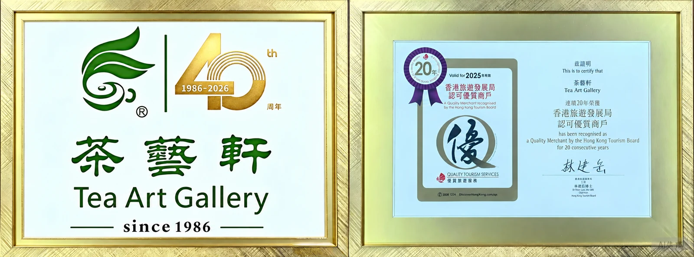
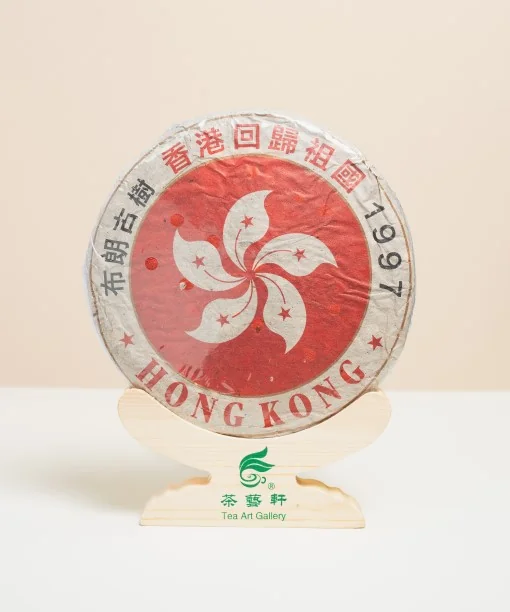
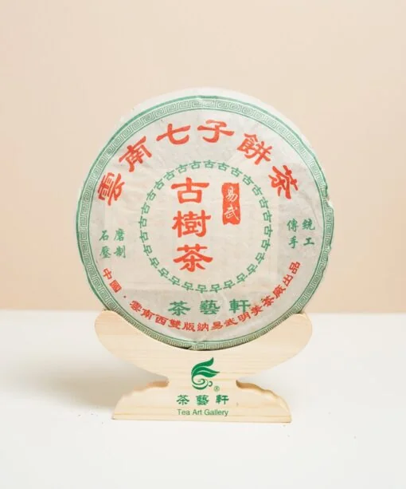
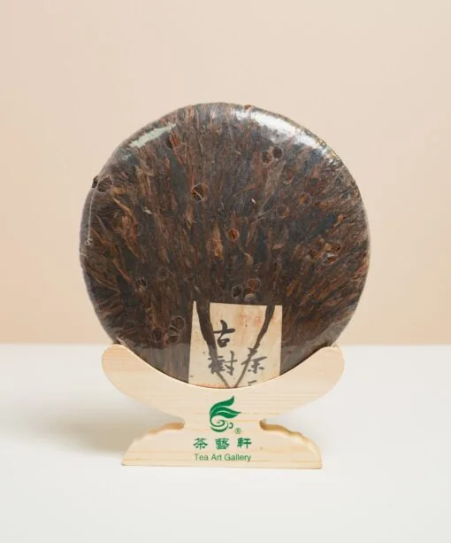
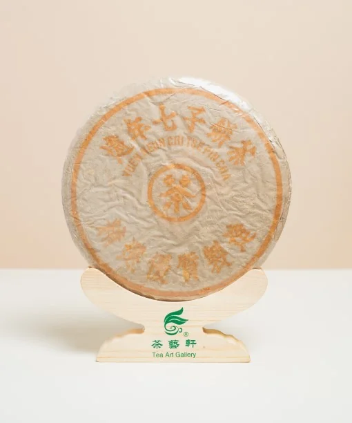
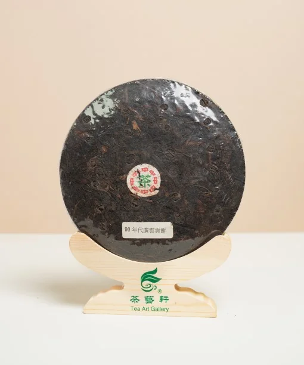
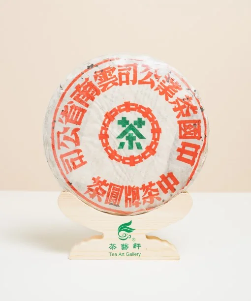
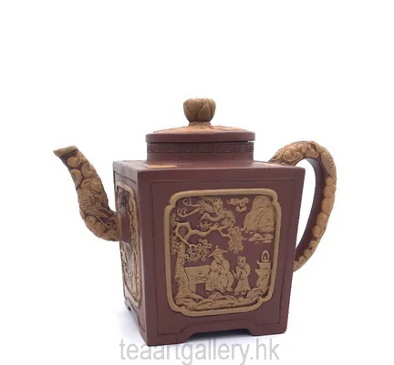
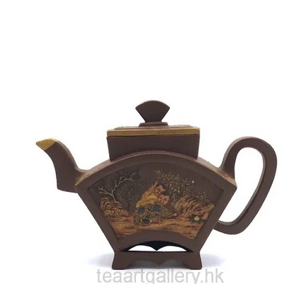
產品選錄僅供展示；年份、規格及供應請向商家核對。本頁不設價格、不設購買。
到訪前建議先致電門店確認開放時間及接待安排。